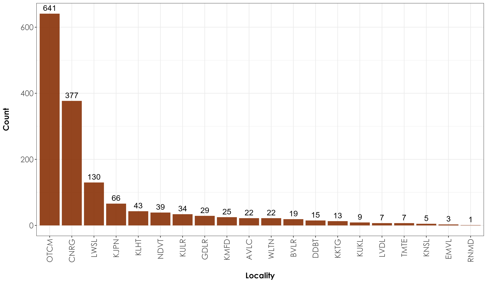

Section 10 Exploratory analysis of occurrence data
This script carries out exploratory analysis of historical and modern occurrence data from the Nilgiri hills.
10.2 Load the historical occurrence data and explore patterns
The historical occurrence data is a combination of data from museum specimens and those observations made in published literature/journals (titled journal data). We apply the following key filters on this dataset prior to carrying out further exploratory analyses: a) we subset historical data to only include specimen information until the year 1950 and b) we excluded historical sampling locations that had very few records (total specimen data < 10).
hist_occ <- read.csv("data/historical-occurrence-data.csv")
# after exploring the data, we will apply the following filters on the dataset
# a: include only data until 1950
hist_occ <- hist_occ %>%
filter(year <= 1950)
# b: a second filter includes only those species that had a minimum count of atleast three specimens and occurred across atleast two unique historical survey locations
# total species count across historical data
spp_count <- hist_occ %>%
group_by(scientific_name, common_name) %>%
count() # total of 179 species
sppMinThree <- spp_count %>%
filter(n >= 3) # total of 92 species
# please note, we include ~four species that were collected from a single historical location Apus melba, Apus melba, Brachypodius priocephalus, Phylloscopus tytleri, Picus chlorolophus
# filter historical data
hist_occ <- hist_occ %>%
filter(scientific_name %in% sppMinThree$scientific_name)
# count of data by year
occ_year <- hist_occ %>%
group_by(year) %>%
count()
# The above count suggests that majority of the bird specimens were recorded in 1881, followed by some data from 1876.
collector <- hist_occ %>%
group_by(collectedBy) %>%
count()
# 37 unique collectors/ornithologists who collected museum specimens in this time period, with the maximum number of records by William Davison, followed by R G Wardlaw-Ramsay. 10.3 Examining historical data by locality
# Twenty unique historical site localities across which species were recorded
occ_locality <- hist_occ %>%
group_by(historical_site_code) %>%
count()
## OTCM had the highest number of specimens (~674) while RNMD had the lowest (1 specimen)
# Examining species by locality
spp_loc <- hist_occ %>%
group_by(common_name, historical_site_code) %>%
count()
# how many unique sites
prop_count <- spp_loc %>%
group_by(common_name) %>%
summarise(uniqueSites = length(unique(historical_site_code)))10.4 Visualizations of historical data
fig_loc_timePeriod <- ggplot(occ_locality, aes(x = reorder(historical_site_code,-n), y = n, fill = historical_site_code)) +
geom_bar(stat = "identity", position = position_dodge(), fill = "#883107", alpha = 0.9) +
geom_text(aes(label = n, hjust = "middle", vjust = -0.5),
position = position_dodge(), angle = 0, size = 5
) +
theme_bw() +
labs(
x = "\nLocality",
y = "Count\n"
) +
theme(
axis.title = element_text(
family = "Century Gothic",
size = 14, face = "bold"
),
axis.text = element_text(family = "Century Gothic", size = 14),
axis.text.x = element_text(angle = 90, vjust = 0.5, hjust = 1),
legend.position = "none"
)
ggsave(fig_loc_timePeriod, filename = "figs/fig_histCount_locality.png", width = 12, height = 7, device = png(), units = "in", dpi = 300)
dev.off()

A count of historical occurrence data across resurvey locations
10.5 Examining species specific counts by locality
fig_spp <- ggplot(spp_count, aes(x = reorder(common_name, -n), y = n, fill = scientific_name)) +
geom_bar(stat = "identity", position = position_dodge(), fill = "#883107", alpha = 0.9) +
geom_text(aes(label = n, hjust = "middle", vjust = -0.5),
position = position_dodge(), angle = 0, size = 5
) +
theme_bw() +
labs(
x = "\nSpecies",
y = "Count\n"
) +
theme(
axis.title = element_text(
family = "Century Gothic",
size = 14, face = "bold"
),
axis.text = element_text(family = "Century Gothic", size = 14),
axis.text.x = element_text(angle = 90, vjust = 0.5, hjust = 1),
legend.position = "none"
)
ggsave(fig_spp, filename = "figs/fig_histSpp.png", width = 50, height = 20, device = png(), units = "in", dpi = 300, limitsize = F)
dev.off()
Species-specific counts of historical data across resurvey locations
10.6 Load modern occurrence data and explore patterns
# note, we are only including those species that were reported in the historical data
# this is mainly done to avoid artificial increases in abundance in the modern time period
mod_occ <- read.csv("data/modern-occurrence-data.csv") %>%
filter(!is.na(historical_site_code)) # 2301 observations of 103 bird species
# ensure the data is comparable with historical data
mod_occ <- mod_occ %>%
filter(!is.na(species_code)) %>%
filter(common_name %in% hist_occ$common_name) %>%
filter(historical_site_code %in% hist_occ$historical_site_code)
# total observations of species in the modern surveys
modOcc_spp <- mod_occ %>%
group_by(common_name) %>%
count() # 63 bird species that were common to modern & historical
# plot figure of species by locality
mod_occ_loc <- mod_occ %>%
group_by(common_name, historical_site_code) %>%
count()
# figure of species by locality
fig_modSpp_loc <- ggplot(mod_occ_loc, aes(x = reorder(historical_site_code,-n), y = n, fill = historical_site_code)) +
geom_bar(stat = "identity", position = position_dodge(), fill = "#883107", alpha = 0.9) +
geom_text(aes(label = n, hjust = "middle", vjust = -0.5),
position = position_dodge(), angle = 0, size = 5
) +
facet_wrap(~common_name) +
theme_bw() +
labs(
x = "\nSpecies and Locality",
y = "Count\n"
) +
theme(
axis.title = element_text(
family = "Century Gothic",
size = 14, face = "bold"
),
axis.text = element_text(family = "Century Gothic", size = 12),
axis.text.x = element_text(angle = 90, vjust = 0.5, hjust = 1),
legend.position = "none"
)
ggsave(fig_modSpp_loc, filename = "figs/fig_modSpp_loc.png", width = 40, height = 17, device = png(), units = "in", dpi = 300)
dev.off()
## Some interesting patterns of certain species being more abundant/detected in certain sites over others.
Modern occurrence data of species across resurvey locations